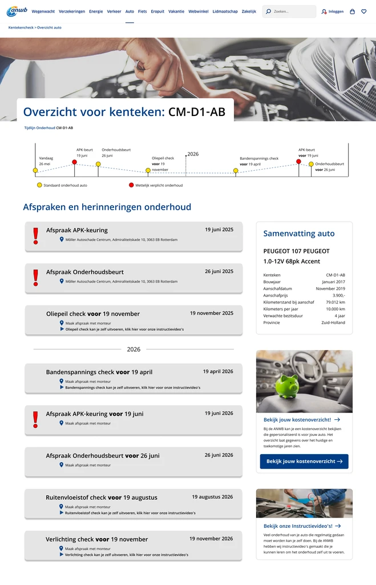
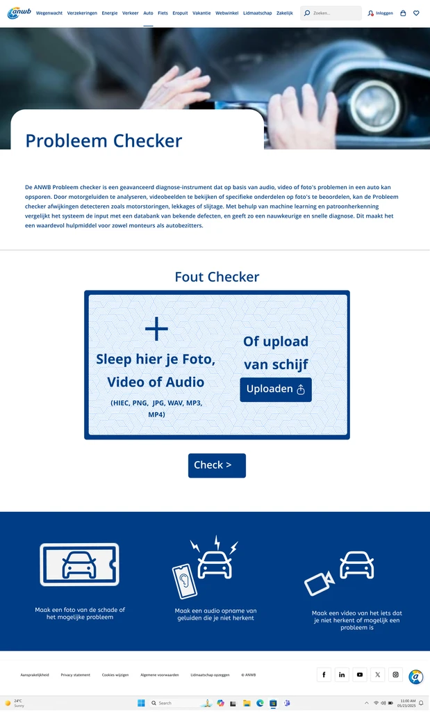
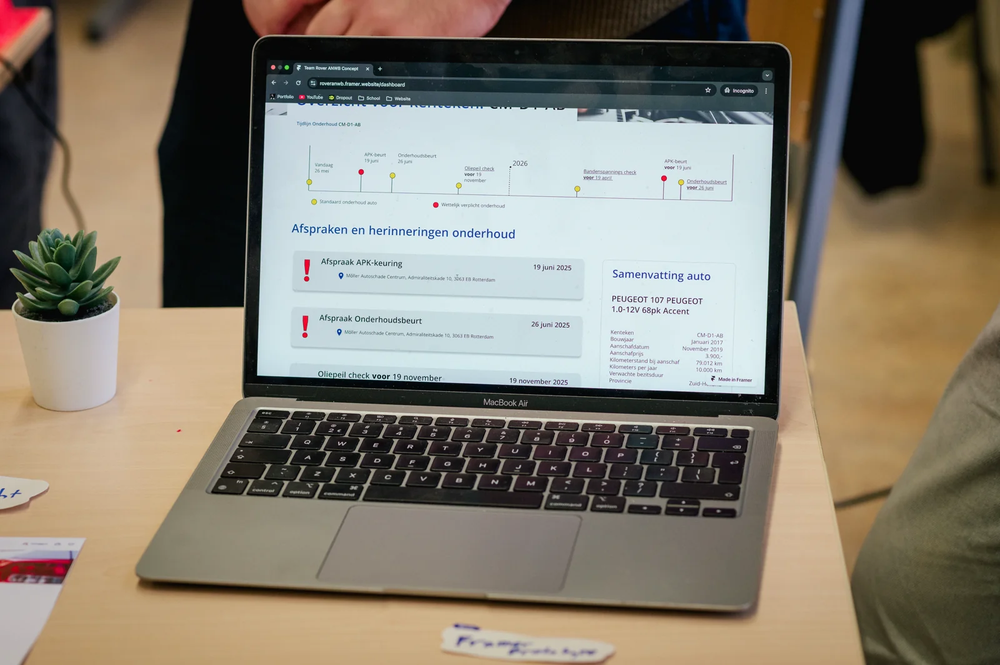
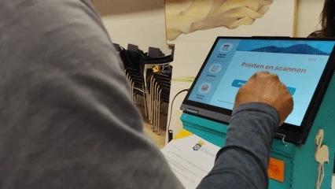
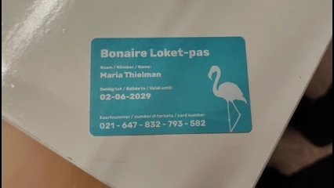
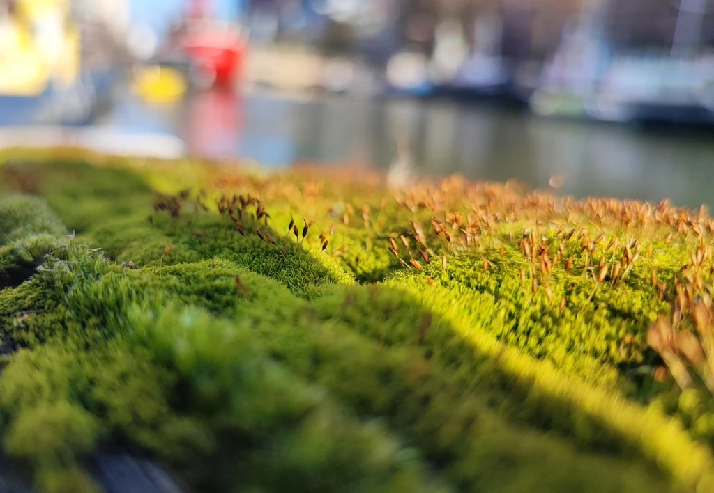
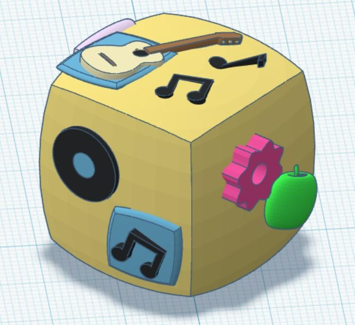
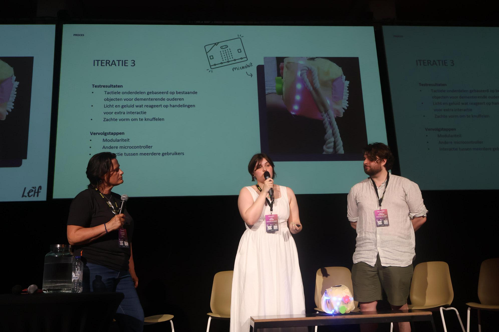
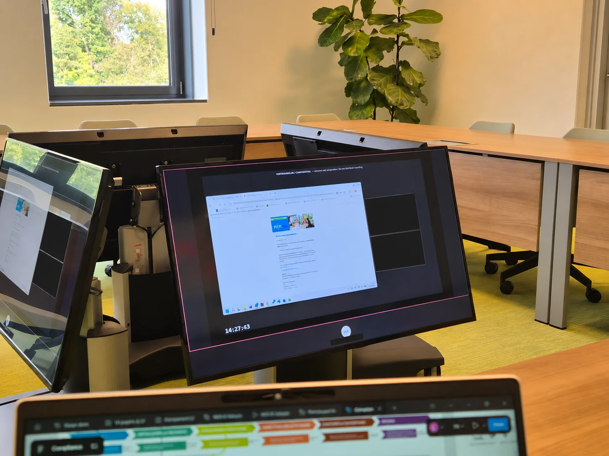
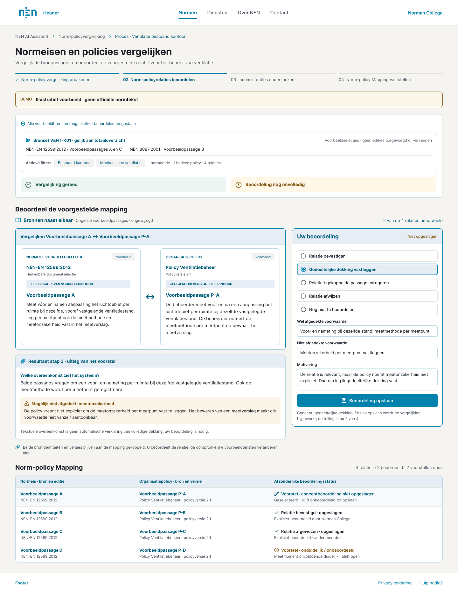

Contact
Let’s talk.
You can reach me here.
UX designer. Animal person.
Take a look around.
An AI-assisted concept that helps drivers understand what might be wrong with their car — before an unexpected garage bill.
Awarded by ANWB

01 / The challenge
During my first year of Communication and Multimedia Design, I worked with classmates to design a webpage for ANWB, following its visual identity. We focused on drivers on a lower income who find it difficult to stay on top of their car-related tasks.
ANWB asked for a webpage with one distinctive feature that would offer practical help and be accessible to everyday drivers. Our answer was the Problem Checker.

02 / The concept
An unfamiliar dashboard warning, a strange sound when accelerating or squeaking tyres: drivers could capture the problem in the way that makes the most sense.
Take a photo, record a video or make an audio recording of what seems wrong.
In the concept, AI analyses the upload to help identify the possible issue.
Understand whether it might be something simple to address, or whether further help is needed.
Still unsure? The webpage also brings together ANWB’s car-maintenance videos for extra guidance. The aim was to help drivers understand their car and potentially avoid unnecessary costs.
03 / My role
I led in-depth interviews with the target audience and analysed the findings using tools such as empathy maps. These helped me understand their needs and pain points.
That research led me to develop the idea for the Problem Checker: a feature that could make an unfamiliar car problem easier to understand, with a low barrier to use. A teammate translated the Problem Checker idea into the interface design.
I also designed the vehicle overview screen. My focus was on making the information clear and easy to scan. Red and yellow highlight upcoming appointments, helping users see what needs their attention.
Select a preview to see the full design.
04 / Recognition
ANWB recognised our work with an award. For me, it was a rewarding conclusion to a project in which research, a practical idea and accessible design came together.
A physical service kiosk that brings government information, documents and appointments together for residents of Bonaire.
Award-winning project
01 / The challenge
The Dutch Ministry of Social Affairs and Employment (SZW) asked us to develop an unconventional solution for residents of Bonaire who experience difficulties communicating with the Dutch government.
Our research showed a mismatch between how government services are offered and what residents need: one central place where clear information about government matters can be found easily and independently.
02 / The solution
BonaPoint is a physical service kiosk that can print and scan documents. A personal card lets residents return to their official documents and appointments, with a PIN providing an additional layer of privacy and security.

A physical card connects residents to their information, documents and appointments.
The card and a personal PIN work together to protect access to the kiosk.
Handle documents at one point, with information ready for the next visit.


03 / My role
I often took a leading role when we needed to explain our work to stakeholders. My teammates regularly looked to me to communicate the problem, our reasoning and the prototype.
Understanding the residents’ situation helped me keep their needs at the centre of our decisions. It also helped me write the case study, connecting the research, the problem and our solution into one story.
I analysed research findings and designed an empathy map with six colour-coded categories. The palette was inspired by our team’s logo, Studio Vivid.
I designed BonaPoint’s main menu in Figma. It became the foundation for the other screens in the interface.
Select a preview to see the full design. Original prototype visuals are in Dutch.
04 / Looking back
SZW was very pleased with our unconventional solution. I look back on this project with pride, particularly on the part I played in understanding the audience, communicating our thinking and bringing the concept together.
Explore the full team case study ↗
For the elective Sensory Design with Nature, I explored the relationship between moss and the microorganisms that live within it. Moss is an important part of our ecosystem and produces oxygen on a small scale.
Moss looks soft, but is often too wet and fragile to touch. I designed a piece of “moss” that invites touch, with tiny organisms projected across its surface. A way to experience a small living world through sight and touch.
Behind the piece
01 / Exploring
Brainstorming, Crazy 8s and solution sketches.
02 / Making
Sewing onto artificial grass to build the landscape.
03 / Bringing it to life
Designing the visual material for the projection.
Called Muziekmaatje in Dutch, Music Buddy is a tactile object that turns movement into light and melodies, designed for people living with dementia.
A Team Leif project exploring accessible, immersive experiences.
Awarded by SHINE01 / The challenge
Careibu brings younger and older people together. They challenged us to explore how immersive technology could help address loneliness among older adults, and connected us with a dementia care residence.
Our focus became residents living with dementia, including people who mainly communicate non-verbally. We wanted to create something they could explore without relying on a phone, a headset or spoken instructions.
How might we create an accessible immersive experience that encourages connection and fits into everyday life at a care residence?
02 / Research in context
We visited the Laurens Dorpsveld dementia care facility to understand the residents and build a relationship with the people supporting them. Cultural probes, focused observation, an expert interview and a focus group informed our decisions.
Many residents communicated mainly through non-verbal responses. Participation needed to work without conversation.
We observed a strong interest in using the hands. The object needed to be comfortable to pick up, hold and explore.
The first test showed more interest in the tactile object than in the accompanying screen. This shifted our attention towards touch and music.
03 / Developing the idea

Iteration 01
We engraved designs into wood and added textures and objects around three themes: music, hobbies and nature. A separate screen paired these themes with animations and sounds, simulated using the Wizard of Oz method.
A resident held the board throughout the test and explored its textures. Its size and amount of detail initially felt overwhelming, while the screen attracted little interest.

Iteration 02
We moved from a hard board to a cushion with embroidered details, concentrating on one theme: music. We simulated sounds with a speaker and began experimenting with Micro:bit.
The next test was less conclusive: the resident was less responsive that day. We used feedback from caregivers and lecturers to inform the following iteration.
Iteration 03
The final object combines a calm colour palette with five tactile sides. Embroidered, sewn and attached materials offer different textures to explore. Movement triggers coloured lights and different melodies.
The interaction stays with the object itself: picking it up, tilting it, touching it and putting it down.
04 / The final interaction
Micro:bit connects the object’s movements to feedback. Each gesture below also triggers a different melody.

05 / My role
Moving between conversations with residents and presentations to stakeholders taught me to communicate the project in different ways. With residents, I learned to notice small reactions and give people space to respond at their own pace. With stakeholders, I learned to make our design choices clear and connect them to the needs behind the project.
I also designed the 3D model and wrote the Micro:bit code. Working on both helped me connect the physical form to its behaviour: thinking about how an idea looks, feels and responds as one experience.

06 / Immersive Tech Week
Presenting Muziekmaatje at Immersive Tech Week brought the research, iterations and prototype together in one story. It challenged me to explain the thinking behind the object and make our design process understandable to a wider audience.
Our team won the SHINE Award for the project. A memorable milestone after building, testing and rethinking the idea together.
Read the full team case study ↗
Making emerging AI services tangible, one use case at a time.
At NEN, I’m part of the Product and Innovation team, exploring how AI can support people working with standards.
01 / The internship
From weekly team meetings to conversations with the director, I’m invited to take part in the organisation around my work. That helps me understand how decisions move through a larger company, and how different perspectives shape a product.
The Product and Innovation team develops and rethinks the NEN Platform: a place for people who work with standards. Within AI Services, I contribute to exploring the role AI could play in that experience.

02 / My work
My main assignment is contributing to a KANO survey that will explore what NEN customers want from AI. I’m involved throughout the process and design all the visual screens used to illustrate the proposed services to respondents.
Starting from the AI Services product manager’s use-case descriptions, I use Figma Make Agent to turn those ideas into concrete interfaces. Regular reviews with the product manager and business analyst help me refine what each screen needs to communicate.
03 / Designing through feedback
This standards and policy comparison is one example of how our reviews shape the design. The goal is to make the proposed workflow understandable for survey respondents.

An earlier version combined notifications and used confusing colours. Splitting the messages makes it clearer that the comparison can be ready while a person’s review is still incomplete.
Framing the two source passages together and adding a comparison icon makes their relationship easier to follow. The visual hierarchy now supports the task of comparing them.
After making these changes, we reviewed the screen together again and approved it for the KANO survey. I’m learning to close that feedback loop: checking the intention behind a comment, making the change and verifying the result together.
04 / What I’m learning
I’m learning that a convincing screen starts with a shared understanding. Translating complex AI ideas into something people can respond to means asking questions, checking assumptions and explaining why a design choice helps.
My work also reaches beyond the survey. I contribute ideas to the compliance process, design posters and give feedback on Figma designs from NEN’s external design agency. Moving between these activities helps me see how individual design decisions connect to the wider product.
Being part of the team makes those lessons concrete. I’m becoming more comfortable sharing work before it feels finished, discussing feedback and bringing it back into the next version.